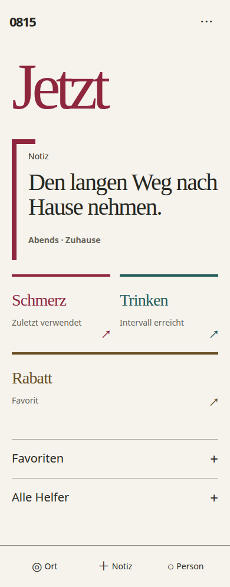
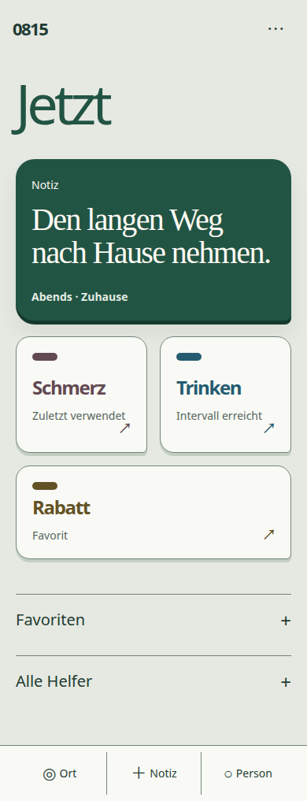
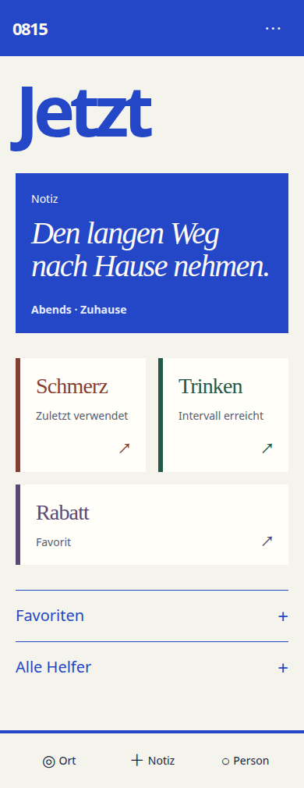

A · Editorial Scale
Große Typografie, Oxblood-Klammer, versetzter Gedanke. Viel Ruhe; näher an der bisherigen Gestaltung.
Studie öffnen ↗
0815 / Designstudien
Historisches Archiv: C · Chromatic Signature ist verworfen. Die damaligen Studien bleiben hier erhalten. Signature v2: neue Varianten und ausgewähltes A öffnen.
Große Typografie, Oxblood-Klammer, versetzter Gedanke. Viel Ruhe; näher an der bisherigen Gestaltung.
Studie öffnen ↗
Tiefengrüne Fläche, geformte Instrumente, ein gemeinsames Leseobjekt. Sehr alltagstauglich; weniger editorial.
Studie öffnen ↗
Kobalt als Bühne, kursiver Gedanke, präzise Helper-Kanten. Stärkste eigene Identität; Farbe bleibt präsent.
Studie öffnen ↗